پنل مدیریتی سبک، سریع و رایگان
روی Cloudflare Workers
NEXA Panel یک پنل مدیریتی است که کاملاً روی زیرساخت رایگان Cloudflare اجرا میشود؛ بدون نیاز به هیچ سرور جداگانهای، نسخهی اختصاصی خودتان را در چند دقیقه بالا میآورید.
نمایی از داشبورد پنل
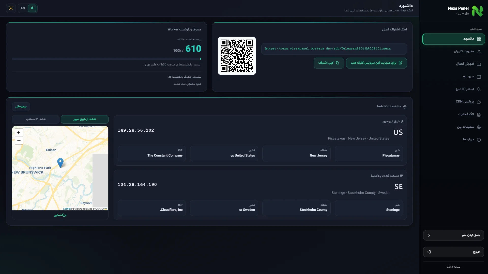
ویژگیها
استقرار فوری
بدون نیاز به سرور اختصاصی؛ فقط چند دقیقه تا بالا آمدن پنل.
پلن رایگان
روی زیرساخت رایگان Cloudflare Workers و D1 اجرا میشود.
نصب یککلیکی
مناسب کاربران غیرفنی، بدون دستور خط فرمان.
نصب دستی
کنترل کامل روی تنظیمات برای کاربران حرفهای.
بهروزرسانی خودکار
با Cron Trigger، پنل خودش را بهصورت زمانبندیشده بهروز میکند.
کانفیگ VLESS
ساخت خودکار کانفیگ با پروتکل VLESS.
TLS / None-TLS
پشتیبانی از هر دو نوع پورت برای انعطاف بیشتر.
مدیریت کاربران
افزودن، ویرایش و نظارت بر کاربران پنل.
بکاپ خودکار و دستی
پشتیبانگیری زمانبندیشده یا با یک کلیک.
پروکسی آیپی ثابت
مناسب کارهای عمومی؛ برای ترید و صرافی توصیه نمیشود.
اسکنر آیپی تمیز
پیدا کردن آیپیهای سالم و بدون فیلتر.
نصب سریع
فقط کافیست وارد صفحهی ساخت پنل شوید و مراحل را دنبال کنید؛ پنل شما روی دامنهی رایگان Cloudflare بالا میآید.
نمایی از داشبورد پنل
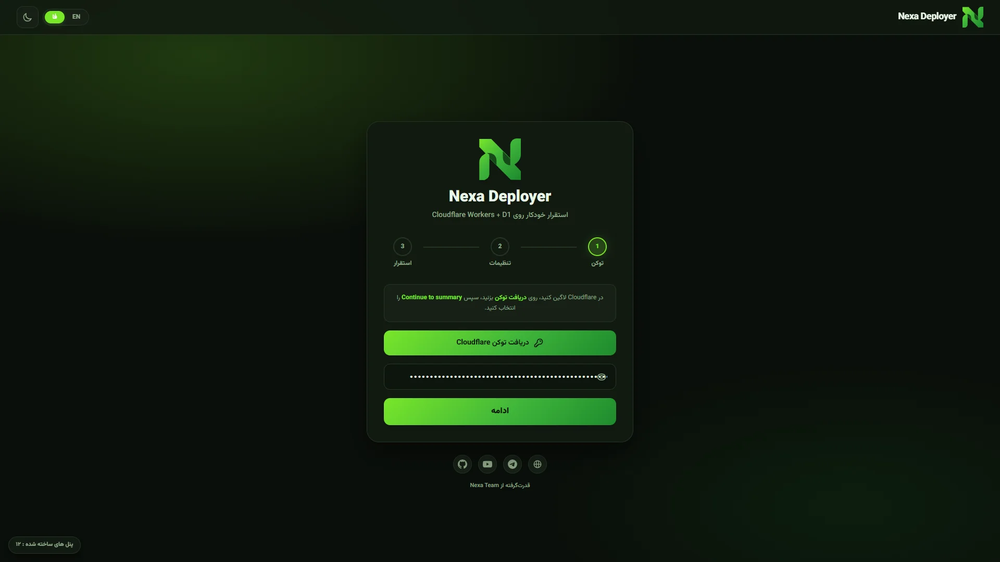
نصب دستی
اگر ترجیح میدهید پنل را قدمبهقدم و با کنترل کامل خودتان راهاندازی کنید، این مراحل را دنبال کنید.
ثبتنام در Cloudflare
تایید ایمیل
بعد از ثبتنام، یک ایمیل تاییدیه به ایمیلتون ارسال میشه؛ کافیه اون ایمیل رو باز کنید و روی «تایید حساب من» بزنید تا حساب شما تایید بشه.
ساخت Worker و آپلود کد
یک Worker جدید در Cloudflare بسازید و کد دانلودشده را روی آن آپلود کنید.
ساخت D1 و بایند کردن
یک D1 Database بسازید و آن را با نام DB به Worker خودتان بایند کنید.
تنظیم متغیر محیطی
متغیر محیطی CF_API_TOKEN را در تنظیمات Worker وارد کنید.
تنظیم Cron Trigger
یک Cron Trigger با مقدار زیر برای Worker تنظیم کنید:
30 20 * * *اکنون پنل شما آماده است
داشبورد
نمای کلی از وضعیت مصرف، لینک اشتراک و مشخصات IP
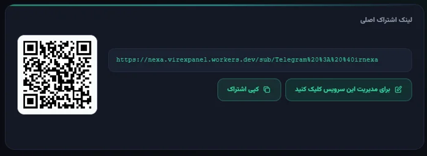
1لینک اشتراک اصلی
در این قسمت شما میتوانید به اشتراک اصلی پنل خود دسترسی داشته باشید
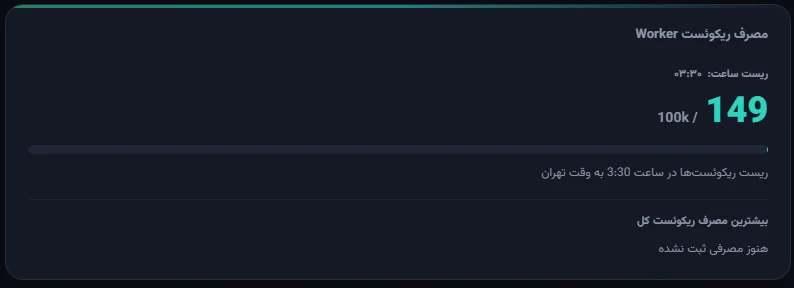
2نمایش مصرف ریکوئست
در این قسمت میتوانید مصرف ریکوئست کل و کاربران خود را ببینید
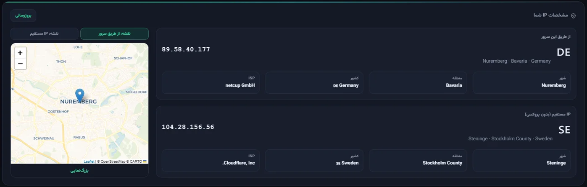
۳نمایش ایپی شما
نمایش ایپی شما و نمایش موقعیت تقریبی شما روی نقشه
مدیریت کاربران
افزودن، ویرایش و مشاهدهی وضعیت کاربران .
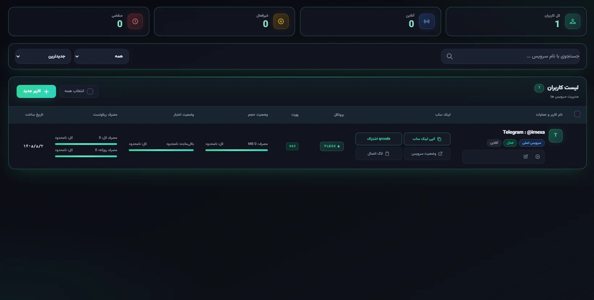
1نمایش وضعیت سرویسها و کاربران
نمایش وضعیت سرویسها و کاربران و مدیریت و ویرایش آنها
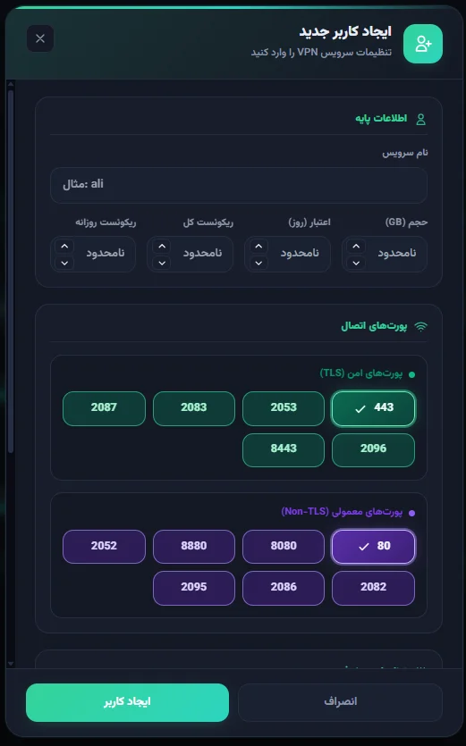
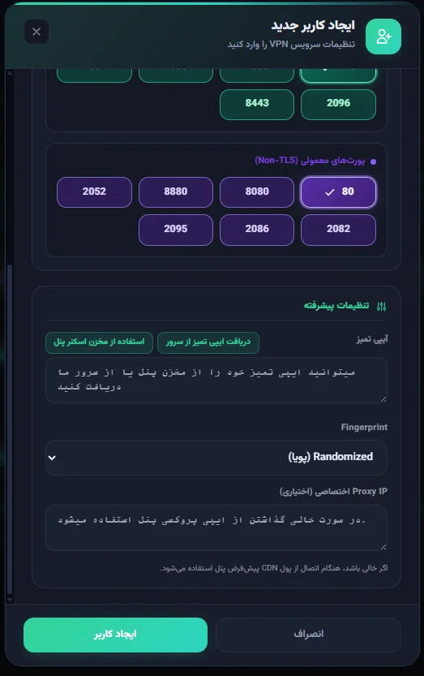
2آموزش ساخت کاربر
از این بخش میتوانید برای کاربر حجم، زمان و ریکوئستها را مدیریت کنید. همچنین میتوانید از پورتهای TLS و None-TLS استفاده کنید.
همانطور که در عکس دوم مشاهده میکنید، میتوانید در این بخش از طریق سرور یا مخزن پنل، آیپی تمیز برای کاربر ست کنید. (آموزش استفاده از آیپی تمیز)
فینگرپرینت روی حالت پیشفرض (در حال حاضر بهترین حالت Chrome است) تنظیم شده است.
همچنین میتوانید پروکسی آیپی جدا برای کاربر ست کنید. (آموزش استفاده از پروکسی آیپی)
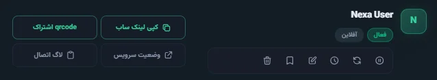
3آموزش دکمهها
از طریق دکمهی کپی سابسکریپشن به لینک اشتراک دسترسی پیدا کنید.
از قسمت qrcode اشتراک میتوانید اشتراک را بهصورت QR کد وارد کلاینت خود کنید.
قسمت وضعیت سرویس برای ارائه به کاربر جهت دیدن وضعیت خودش است.
قسمت لاگ اتصال، مشخصات کاربرانی که به سرویس متصل شدهاند را نمایش میدهد؛ مانند آیپی، زمان اتصال و نوع ریکوئست (تست اتصال یا متصلشدن به سرویس).
دکمههای زیر اسم سرویس به ترتیب از راست: توقف سرویس، ریست حجم سرویس کاربر، ریست زمان سرویس کاربر، ویرایش سرویس کاربر، ذخیره سرویس (برای جلوگیری از حذف خودکار) و حذف کامل سرویس.
نکته: سرویس اصلی قابل حذف نیست، چرا که سرورهای نود روی سرویس اصلی اجرا خواهند شد.
آموزش اتصال
راهنمای گامبهگام اتصال برای اندروید، آیفون، ویندوز و مک.
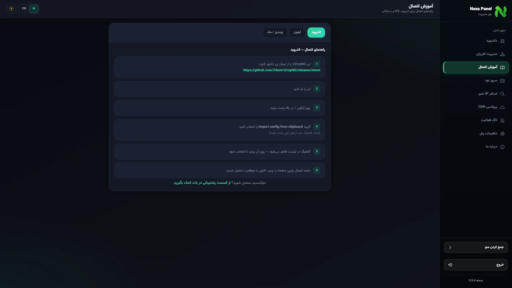
این قسمت اموزش وارد کردن لینک سابسکریپشن را به کلاینت مربوطه میدهد
سرور نود
مدیریت نودهای متصل به پنل.
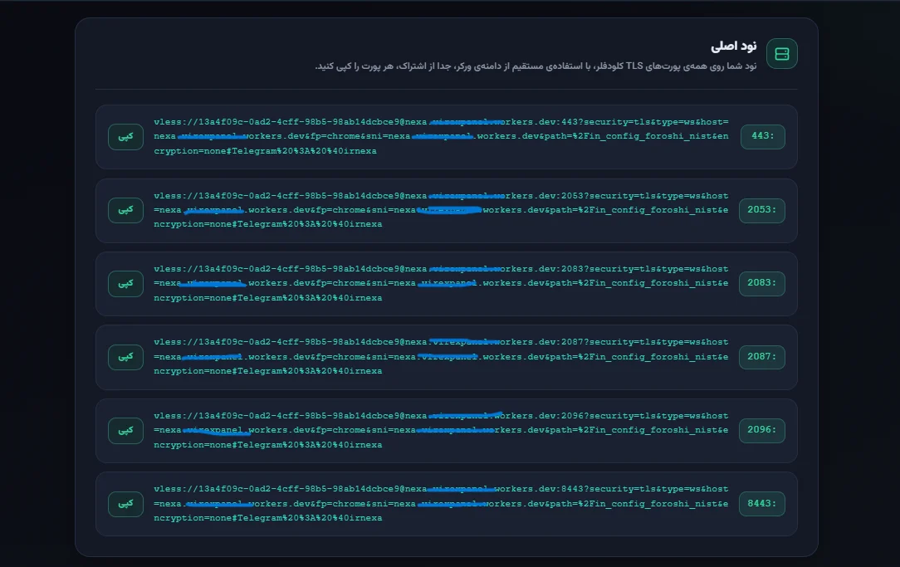
در این قسمت میتوانید به سرور های نود سرویس اصلی وصل شوید این نود ها بر پایه پورت های tls کلادفلر میباشد که در قسمت ادرس به جای قرار گرفتن ایپی تمیز ادرس ورکر شما قرار میگیرد (حالت خودکار )
اسکنر IP تمیز
پیدا کردن سریعترین آیپیهای تمیز کلودفلر برای شبکهی شما.
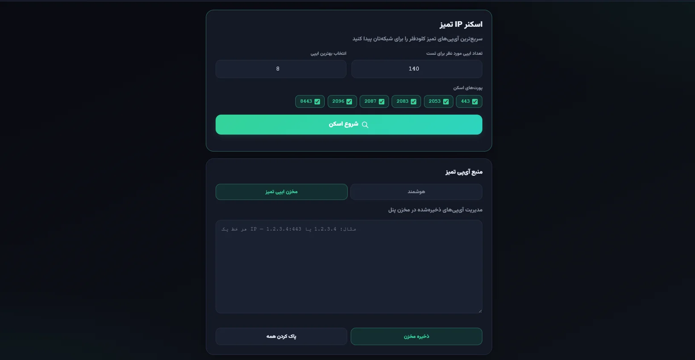
حالت اول: اسکن با اینترنت شما — در این حالت مطابق اینترنت و ISP ارائهدهنده اینترنت شما اسکن انجام میشود و بهترین آیپیها برای شما یافت خواهد شد.
حالت دوم: دریافت آیپی تمیز از سرور — در این حالت آیپیهای اسکنشده از قبل، از طریق سرور ما به دست شما میرسد.
پروکسی CDN
تنظیمات دسترسی CDN کلودفلر و PROXYIP.
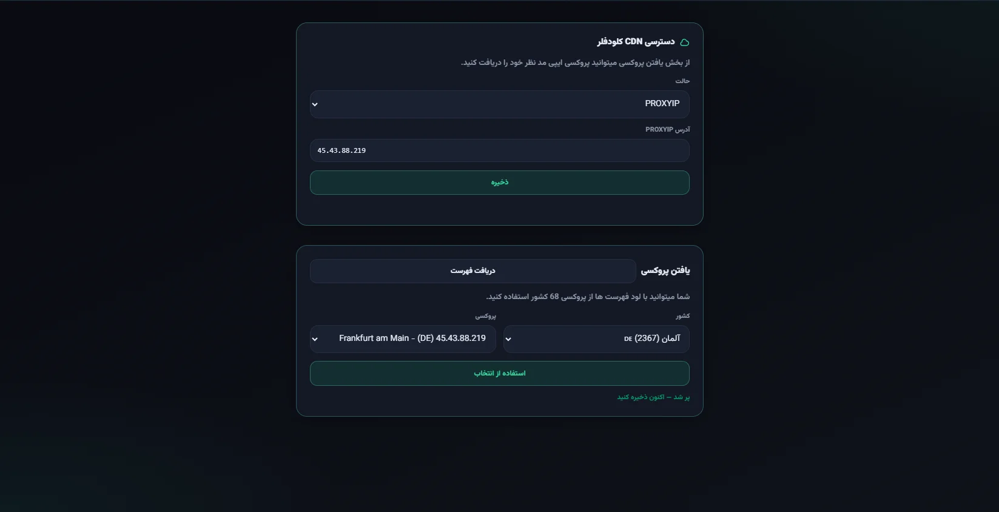
در بخش پروکسی IP، با کلیک روی گزینهی «دریافت لیست»، فهرستی شامل آیپیهای مربوط به ۶۸ کشور مختلف در اختیار شما قرار میگیرد. سپس میتوانید آیپی مورد نظر خود را از میان این لیست انتخاب کنید.
نکته: بخشی از این آیپیها از نوع IPv6 و بخشی دیگر از نوع IPv4 هستند؛ بنابراین لازم است چند مورد را تست کنید تا آیپی مناسب خود را پیدا کنید.
در صورتیکه آیپی یافتشده از نوع IPv4 باشد، میتوانید از آن بهعنوان آیپی ثابت خود استفاده کنید.
در آخر حتما روی دکمه ذخیره کلیک کنید.
آموزش کنترل پنل
آموزش ریاستارت، خاموش کردن پنل مدیریت و قطع سرویسها
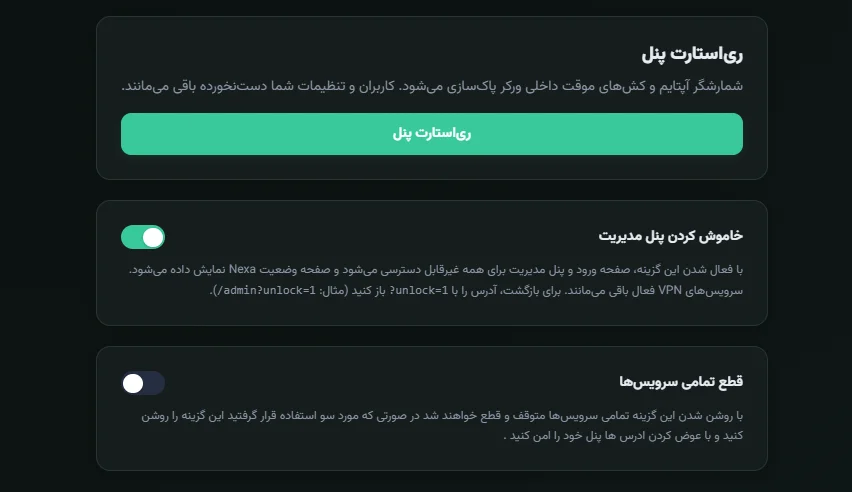
1ریاستارت پنل
شمارشگر آپتایم و کشهای موقت داخلی ورکر پاکسازی میشود. کاربران و تنظیمات شما دستنخورده باقی میمانند.
2خاموش کردن پنل مدیریت
با فعال شدن این گزینه، صفحه ورود و پنل مدیریت برای همه غیرقابل دسترسی میشود و صفحه وضعیت Nexa نمایش داده میشود. سرویسهای VPN فعال باقی میمانند. برای بازگشت، آدرس را با ?unlock=1 باز کنید (مثال: /admin?unlock=1).
3قطع تمامی سرویسها
با روشن شدن این گزینه تمامی سرویسها متوقف و قطع خواهند شد در صورتی که مورد سو استفاده قرار گرفتید این گزینه را روشن کنید و با عوض کردن آدرس ها پنل خود را امن کنید .
لاگ فعالیت
نمایش لاگ پنل شما
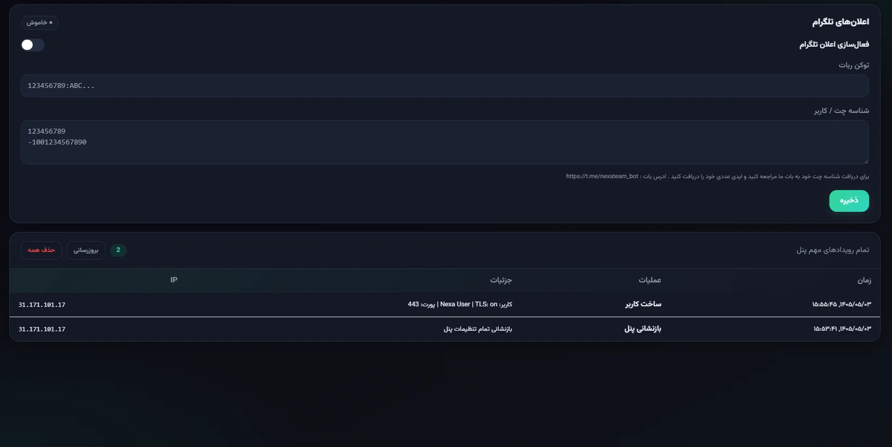
در این بهش میتوانید لاگ پنل خود را مشاهده کنید همچنین میتوانید با تنظیم توکن ربات تلگرام لاگ پنل خود را از طریق تلگرام دریافت کنید..
تنظیمات پنل
بهروزرسانی، مسیر صفحات، نامگذاری کانفیگ و قطع اضطراری سرویسها.
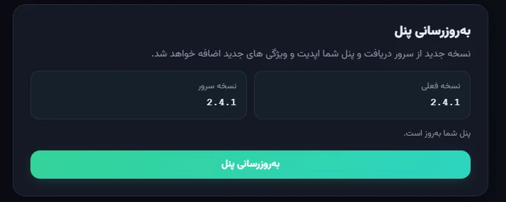
1بهروزرسانی پنل
در این بخش نسخهی فعلی پنل شما و آخرین نسخهی موجود روی سرور نمایش داده میشود. با زدن دکمهی «بهروزرسانی پنل»، آخرین تغییرات و ویژگیهای جدید روی پنل شما نصب میشود.
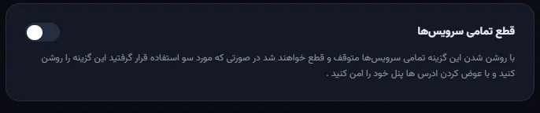
2قطع اضطراری تمامی سرویسها
با فعال کردن این گزینه، دسترسی تمام کاربران بهصورت لحظهای قطع میشود؛ مناسب مواقعی که نیاز به توقف سریع کل سرویسها دارید. برای بازگرداندن دسترسی، کافیست همین گزینه را دوباره غیرفعال کنید.
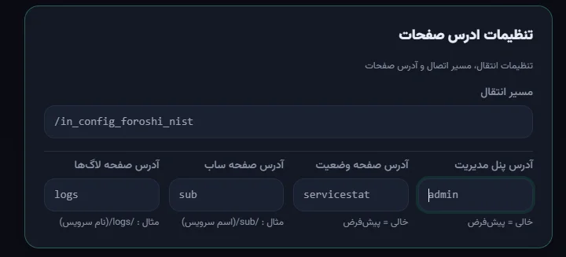
3تنظیمات آدرس صفحات
از این قسمت میتوانید مسیر ورود به پنل مدیریت و همچنین آدرس صفحات وضعیت سرویس، لینک اشتراک (ساب) و لاگ اتصال کاربران را به دلخواه خودتان تغییر دهید تا شناسایی و حدس زدن آنها برای دیگران سختتر شود.
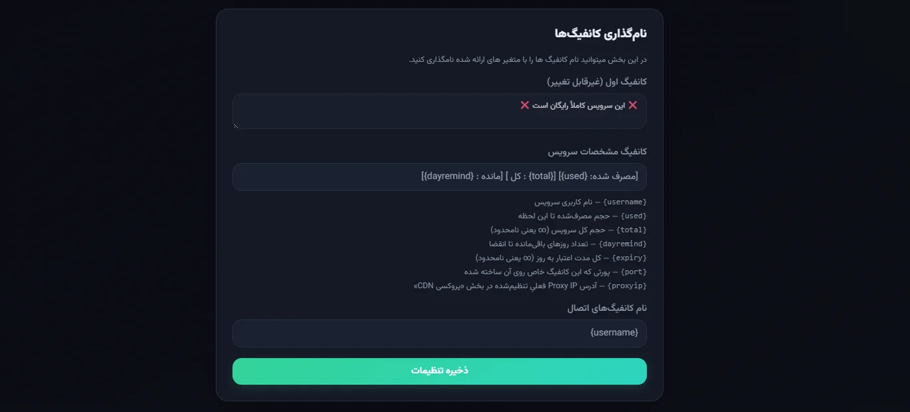
4نامگذاری کانفیگها
در این بخش میتوانید قالب نام کانفیگها و مشخصات نمایشی سرویس (مثل حجم مصرفی، حجم کل، روزهای باقیمانده و پورت) را با استفاده از متغیرهایی مانند {used}، {total} و {dayremind} شخصیسازی کنید.
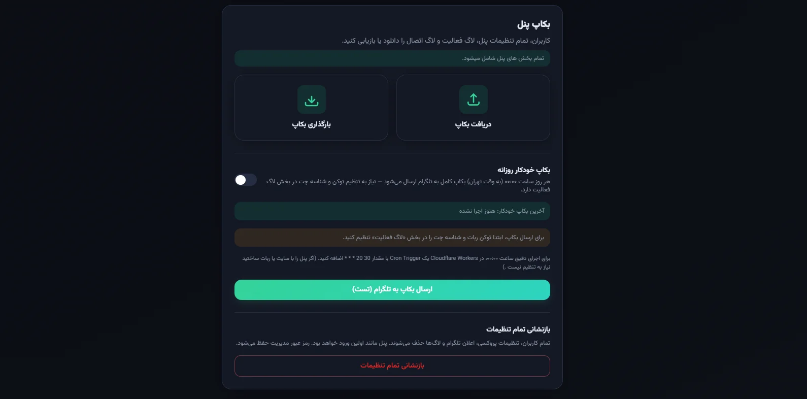
5بکاپگیری از پنل
میتوانید یک نسخهی پشتیبان کامل از کاربران، تنظیمات و لاگهای پنل دریافت یا یک بکاپ قبلی را بارگذاری کنید.
با فعال کردن «بکاپ خودکار روزانه» و وارد کردن توکن ربات تلگرام و شناسه چت، پنل هر روز رأس ساعت مشخصشده یک بکاپ کامل برای شما به تلگرام ارسال میکند.
گزینهی «بازنشانی تمام تنظیمات» تمام کاربران، پروکسیها، تنظیمات تلگرام و لاگها را پاک کرده و پنل را به حالت اولیه بازمیگرداند؛ این عملیات غیرقابل بازگشت است.
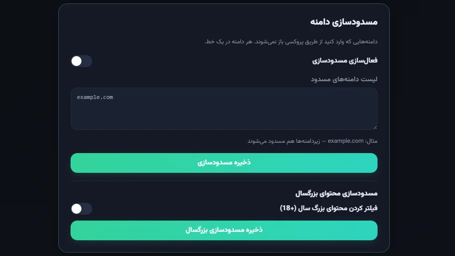
6مسدودسازی دامنه و فیلتر محتوای بزرگسال
در این قسمت میتوانید فهرستی از دامنهها را وارد کنید تا کاربران پنل نتوانند از طریق پروکسی به آنها متصل شوند؛ با مسدود کردن هر دامنه، تمام زیردامنههای آن نیز مسدود خواهند شد.
با فعال کردن «مسدودسازی محتوای بزرگسال»، دسترسی به سایتهای دارای محتوای نامناسب (۱۸+) برای تمام کاربران پنل بهصورت خودکار مسدود میشود.
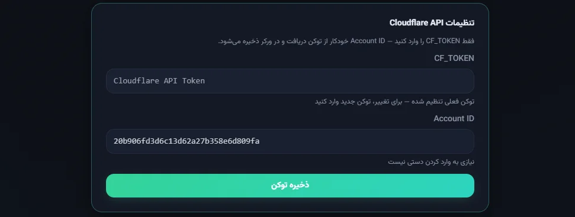
7تنظیمات Cloudflare API
با وارد کردن CF_TOKEN، پنل بهصورت خودکار به حساب Cloudflare شما متصل شده و Account ID را دریافت میکند؛ این توکن برای ساخت و مدیریت خودکار سرورهای نود و سایر عملیات ورکر لازم است و نیازی به وارد کردن دستی Account ID نیست.
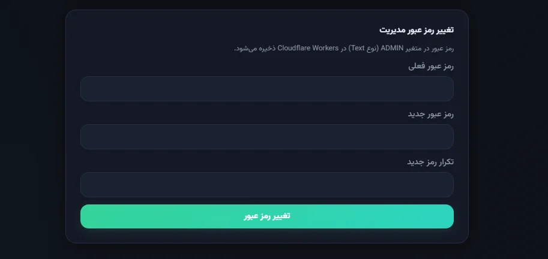
8تغییر رمز عبور مدیریت
برای افزایش امنیت پنل، میتوانید رمز عبور ورود به بخش مدیریت را از همین قسمت تغییر دهید. رمز عبور جدید در متغیر محیطی ADMIN در Cloudflare Workers ذخیره میشود.
لینک های کاربردی
حمایت مالی
اگر این پروژه برایتان مفید بوده، میتوانید با ارسال رمزارز از پروژه حمایت کنید 🙏
| ارز | آدرس کیف پول |
|---|---|
| USDT (ERC20) | 0x78684D142CfD0dF27Cea2b2f62d98aBa0D4bc288 |
| TON (GRAM) | UQBk2fhFpLgktSVucFgXdsjqNDHzHv-0GRlbN2jplnz94GZh |
| BTC | bc1qzzekk7y5fpzndywzk2jhmd8vv4wd7sdrq5csvu |
لایسنس
این پروژه تحت لایسنس MIT منتشر شده است. برای جزئیات بیشتر فایل LICENSE یا صفحهی رسمی MIT License را ببینید.